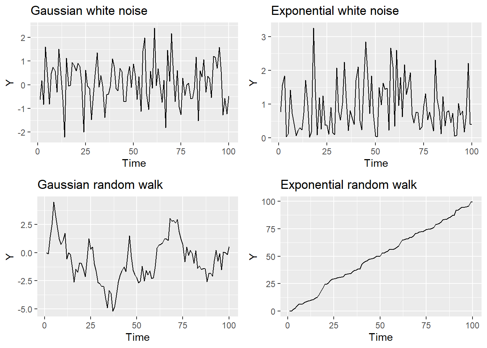
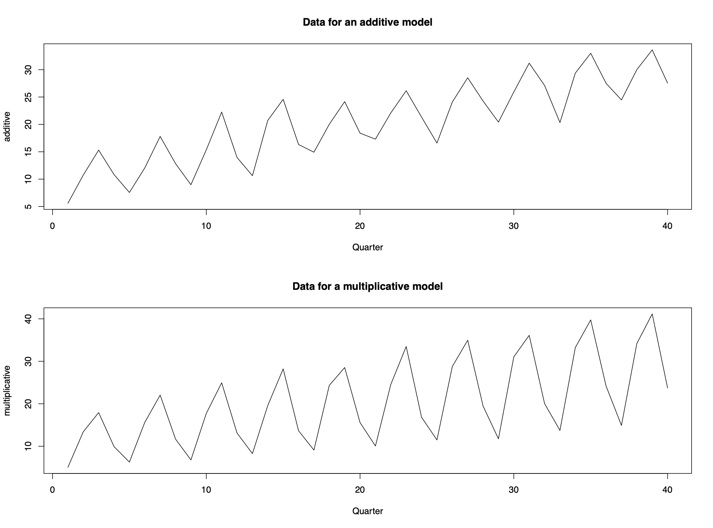

1 Chapter 1
1.1 Definition
\[\{X_t|t\in T \}\] where \(X_t\) denotes random variables that are continuous, \(T\) denotes index sets that are discrete and equally spaced in time
\(x_t\) denotes observations, or realisations of \(X_t\)
1.2 White Noise: purely random process
\[E[X_t]=\mu\] \(Var[X_t]=\sigma^2\) where each \(X_t\) is independent
It asssumes the observations are all independent
1.3 Random Walk: random but dependent
\[ X_T = X_{t-1} +Z_t\] where \(Z_t\) is a purely random process with mean \(\mu\) and variance \(\sigma^2\)
 ## Time Series Modelling
Time series data are often decomposed into the following three components: Trend, Seasonal Effect, Unexplained variation

Data with additive structure is easier to analyze as compared to multiplicative structure. If the time series data has multiplicative structure, we can model it by using transformations.
1.3.1 Log Transformation
\[log(X_t)=log(m_t\cdot s_t\cdot e_t)=log(m_t)+log(s_t)+log(e_t)\]
Use to stablize variance, make seasonal effect \(s_t\) additive, & make the data normally distributed.
1.3.2 Box-Cox Transformation
\[ y_t=(x_t^\lambda-1)/\lambda \space\space \lambda\ne0\] \[ or \space y_t=ln(x_t) \space\space \lambda=0\] where \(\lambda\) is a tuning parameter chosen by the analyst
1.4 Time Series Properties
1.4.1 Mean function (if mean is constant)
\[\mu_t=E[X_t]\] \[\hat \mu=\frac 1n\sum_{t=1}^{n}x_t\] In case of walking average, see ch.2
1.4.2 Variance function (if variance is constant)
\[\sigma_t^2=Var[X_t]=E[X_t^2]-E[X_t]^2\] \[\hat \sigma^2=\frac1{n-1} \sum_{t=1}^n{(x_t-\hat\mu)^2}\]
1.4.3 Autocovariance function (ACVF):
\[\gamma_{s,t}=Cov[X_s,X_t]=E[X_sX_t]-E[X_t]E[X_s]\] where \(\gamma_{t,t}=Cov[X_t,X_t]=Var[X_t]=\sigma_t^2\)
Real data: \[\gamma_\tau=Cov[X_tX_{t+\tau}]\] with lag \(\tau=0,1,2,..\)
1.4.4 Autocorrelation function (ACF):
\[\rho_{s,t}=Corr[X_s,X_t]=\frac{Cov[X_s,X_t]}{\sqrt{Var[X_s]Var[X_t]}}=\frac{\gamma_{s,t}}{\sigma_s\sigma_t}\] where \(\rho_{t,t}=Corr[X_t,X_t]=1\)
Real data: \[\rho_\tau=Corr[X_tX_{t+\tau}]=\frac{Cov[X_t,X_{t+\tau}]}{\sqrt{Var[X_t]Var[X_{t+\tau}]}}=\frac{\gamma_\tau}{\gamma_0}\]
1.4.5 Properties
Property 1: \(\rho_\tau=\rho_{-\tau}\)
Property 2: \(|\rho_\tau|\leq1\)
Property 3: Invertibility is not assumed
1.5 Stationarity
A time series process \(\{X_t|t\in T\}\) is strictly stationary if the joint distribution \(f(X_{t1},...,X_{tk})\) is identical to the joint distribution \(f(X_{t1+r},...,X_{tk+r})\) for all collections \(t_1,...,t_k\) and separation values \(r\). In other words, shifting the time origin of the series by \(r\) has no effect on its joint distribution.
A time series process \(\{X_t|t\in T\}\) is weakly stationary (or second-order stationary) if 1, mean function is constant and finite; 2, variance function is constant and finite; 3, autocovariance and autocorrelation functions only depend on the lag.